| |
Nor Cal 2017
All right. Time for another update. We're back up in Northern California. I know we did several visits last year, but this time, I decided to only do one main visit, and...damn. This was quite a visit. I was seriously considering breaking up this update into multiple parts like I do with other similar updates since I normally do that when it comes to updates where I visit multiple parks (and I did visit several different parks. I pretty much went everywhere except the Santa Cruz Beach Boardwalk). But I thought I'd rather have one giant update instead of several smaller updates. And of course, we're back at Six Flags Discovory Kingdom, simply because...hey. It's right by where I'm staying, and it's free. Why the f*ck not? =)
Pff. You think you're so smart dolphins? You're only the 2nd most intellegent creatures in the Universe. Octopus are smarter (Nope. Humans are only the 3rd most intellegent species). ;)
Hmm. We get into Six Flags Discovory Kingdom. And we don't head straight for Medusa, Joker, or Superman. Nope. First thing is...the 3D theater? Why!!?
Yep. We're here to check out Monkey Madness. We were told that this was the worst simulator ever and it had to be ridden.
So basically, it's this weird thing where you're the monkeys, trying to get bananas, except on a roller coaster. And the roller coaster was designed in Ultimate Ride, which if you don't remember, was a coaster game which could best be described as if RCT and No Limits had a baby, and then you made a knock off version of that baby.
 It's only in 2D!? They can't even get it in 3D!? This is f*cking hilarious. Seriously, this thing is the Tommy Wisseau of theme park simulators. It's so bad, it's hilarious. Just like it was advertised.
It's only in 2D!? They can't even get it in 3D!? This is f*cking hilarious. Seriously, this thing is the Tommy Wisseau of theme park simulators. It's so bad, it's hilarious. Just like it was advertised.
OK. That's enough crappy simulators. After that and yet another drive up the Grapevine, it's about time we did some roller coasters.
Now these are the types of lines I enjoy seeing on roller coasters. =)
 Hey, it may be a small funky impulse, but I like it.
Hey, it may be a small funky impulse, but I like it.
 Wee! Hangtime!
Wee! Hangtime!
 Wee! Hangtime!
Wee! Hangtime!
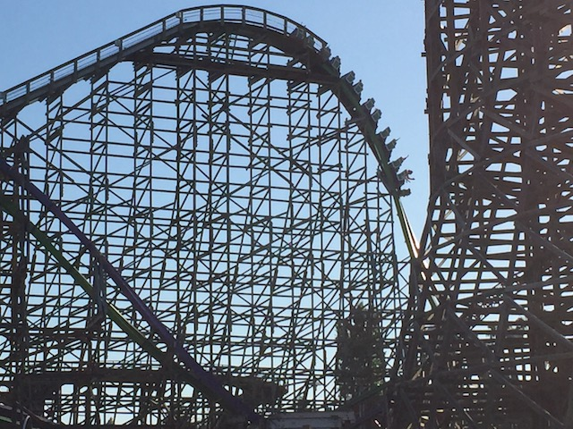
Yeah, Joker may be one of the weaker RMCs without a doubt, but it's still an RMC and a lot of fun.
 Yep. Since my last visit, Six Flags Discovory Kingdom has added a new ride. A giant frisbee named Wonder Woman. While I was annoyed at the fact that Six Flags is only adding clones, I have to say, I love these frisbees. I REALLY hope Magic Mtn gets a clone of this for 2018, because a flat ride like this is essentially exactly what SFMM needs.
Yep. Since my last visit, Six Flags Discovory Kingdom has added a new ride. A giant frisbee named Wonder Woman. While I was annoyed at the fact that Six Flags is only adding clones, I have to say, I love these frisbees. I REALLY hope Magic Mtn gets a clone of this for 2018, because a flat ride like this is essentially exactly what SFMM needs.
Speaking of clones...
 Seriously. This ride is good. Really good. Glad it's popping up everywhere.
Seriously. This ride is good. Really good. Glad it's popping up everywhere.
Ooh. I found a couple random bucks just laying right on the ground. Today must be my lucky day.
You know Six Flags. When NorCal is experiencing a record breaking heat wave, that might be a good time to open up your rapids ride. Just a little bit of advice. ;)
Hey Knotts Berry Farm! Look what I can ride here! Should I ride it? Just because I can? Nah. =P
Odin's Snack Shack. Here, we serve a wide and diverse range of humans from all races, genders, sexualities, etc. All as snacks for Odin. Thank you for being Odin's snack for the day.
We're sorry. But the animals are having technical difficulties. Our mechanic is in there, trying his hardest to fix them. ;)
You know what I just realized? Six Flags Discovory Kingdom now has two different frisbees. Never realized that until after I rode Tasmanian Devil today. Eh, they give different rides as Wonder Woman is more about speed and the swing while Tasmanian is more about the spinning. Plus, I really like both.
 Hey, closing out the day with a mini-marathon on Medusa. Sounds good to me.
Hey, closing out the day with a mini-marathon on Medusa. Sounds good to me.
Why you discriminating against the Puffins Papa Joes? That's birdist you assholes! =P
All right. Time for Day 2. And we're back at our favorite water park in California. SunSplash.
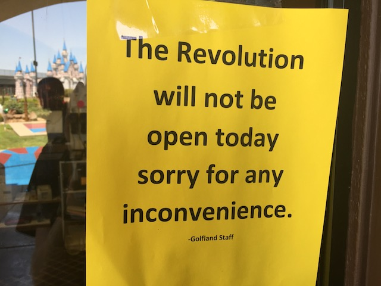
Something I love about SunSplash. Most parks will have the issue where a ride will be closed all day, but they never announce that it's closed all day because they think it might open up. At SunSplash, it's the exact opposite. They had a sign saying that Revolution would be closed all day. Bummer. But nope. Here, they will announce that a ride, like Revolution, will be closed all day. But then halfway throughout the day, they manage to fix Revolution, and it opening up managed to be a pleasant surprise for us (It's a fun ride. One of the better Tube Bowls BTW).
 This sort of Tantrum slide is a lot of fun. I really hope more slides like it pop up in the future.
This sort of Tantrum slide is a lot of fun. I really hope more slides like it pop up in the future.
 Can we please add a Master Blaster type slide to Six Flags Hurricane Harbor? One will fit right in Flashback's old spot. =)
Can we please add a Master Blaster type slide to Six Flags Hurricane Harbor? One will fit right in Flashback's old spot. =)
OK. I love SunSplash. But I have to complain about something. There's just some sort of new rule where you can't slide down many of the slides holding your flip flops. I don't get why. I was able to hold my shoes when I visited both Cowabunga Bay Las Vegas and Six Flags Hurricane Harbor earlier this month. But maybe this rule was always there and I never noticed since I just was barefoot. I forget. While it's annoying here, they sure as f*ck better not be enforcing this at the SunSplash in Phoinex. For people's own safety, they better be allowing people to go down with flip flops and shoes in the Arizona SunSplash so the pavement doesn't literally burn them. Also, there's this super obnoxious rule on Dark Shot of all slides. You can't go down with a watch. You must take your watch off because...I don't know. It's not even a big or intense slide. It's literally just Vortex without the toilet bowl, which is what makes that ride so great (Riding it today was great BTW). The only other water slide where I had to take my watch off was the Aqua Dunk on the Disney Cruise. Now that is totally pointless and just a pain in the ass. The watch ain't coming off. Trust me. The only thing that ever got my watch to snap off was jumping the 70 ftr at Tar Creek Falls. And that was only once. It also managed to stay on that jump all the other countless times I've jumped (I think something like 65 times. Cody's the one who keeps count. Not me). And yeah. The impact of jumping off a 70 ft cliff, it's gonna be stronger than any water slide, let alone one as mild as Dark Shot. So that's a real pain in the ass and a bummer about a water park I otherwise love. Because yeah. SunSplash is still f*cking awesome! =)
 Thunder Falls really has some airtime. Just make sure we don't fly off the slide Alex. ;)
Thunder Falls really has some airtime. Just make sure we don't fly off the slide Alex. ;)
 OK. This was the freakiest ride on Dark Hole ever. I was sliding along. Fun ride, getting laterals, WEE!!! I'm getting towards the end of the slide, and I'm starting to see the light. When suddenly, out of nowhere, I see...this tube. This tube is just stuck in the middle of the slide. OH SHI--*SMACK*!!!! Plowed right into the tube, and I came out of the slide with two tubes. I have no idea what the lifeguard thought. And now I'm just wondering. How the hell did that tube get stuck in there? What the hell did person in the tube do? Did they just stop themselves here, and then ride the rest like a body slide? This just confuses me so much. I still have no idea how the hell that happened!
OK. This was the freakiest ride on Dark Hole ever. I was sliding along. Fun ride, getting laterals, WEE!!! I'm getting towards the end of the slide, and I'm starting to see the light. When suddenly, out of nowhere, I see...this tube. This tube is just stuck in the middle of the slide. OH SHI--*SMACK*!!!! Plowed right into the tube, and I came out of the slide with two tubes. I have no idea what the lifeguard thought. And now I'm just wondering. How the hell did that tube get stuck in there? What the hell did person in the tube do? Did they just stop themselves here, and then ride the rest like a body slide? This just confuses me so much. I still have no idea how the hell that happened!
OH SH*T!!! I was expecting NightSplash to be much less crowded. More private, more of a cool twilight night slide expereince. Instead, the water park became DISGUSTINGLY crowded. That line to get into the park was 45 minutes long. And apparently, it only got longer. Seriously, Alex and I were joking that this line is going to hit the street, and if this keeps up, just might make it all the way to the f*cking 80 freeway! This line could've been made much shorter if they had a seperate line for those who already bought tickets and those who still need to buy tickets! Seriously SunSplash. Please seperate the two.
 Wait. What the f*ck is illegal speech? I'm sorry, but unless you're talking about death threats, libel, slander, or shouting "FIRE!!!" in a crowded theater, there's no such thing. I know some assholes have used this as a cover for being terrible disgusting bigoted human beings, but Free Speech. It's a thing. Respect it. It doesn't matter how terrible, vile, or racist what you're saying is. If it's not one of the things I mentioned earlier, it's Free Speech. Hate Speech is Free Speech. Now that's not to say that there are no consequences, but that is free speech. It is not illegal people. Please learn that.
Wait. What the f*ck is illegal speech? I'm sorry, but unless you're talking about death threats, libel, slander, or shouting "FIRE!!!" in a crowded theater, there's no such thing. I know some assholes have used this as a cover for being terrible disgusting bigoted human beings, but Free Speech. It's a thing. Respect it. It doesn't matter how terrible, vile, or racist what you're saying is. If it's not one of the things I mentioned earlier, it's Free Speech. Hate Speech is Free Speech. Now that's not to say that there are no consequences, but that is free speech. It is not illegal people. Please learn that.
Yeah. We left Night Splash early because we were only able to do a couple of slides thanks to the INSANE crowds. But it was still a really fun day.
Hey. What works well after some fun water slides? WINGS!!! Seriously, Buffalo Wild Wings is awesome. I get kind of sad when I read that Millenials are killing casual dining places, such as Buffalo Wild Wings and Applebees. Hey, that's not fair. Buffalo Wild Wings is much better than Applebees! =P Interesting to read that as a millenial myself. But seriously, I hope Buffalo Wild Wings does better because their wings are really good (Don't care about Applebees though. Sorry Applebees).
Great. Comcast is dissatisfied with buying all our politicians and trying to destroy the internet. Seriously. These evil bastards are trying to kill Net Neutrality, which would be DEVESTATING for the Internet. Seriously, I know this is the middle of a coaster update and political activism is probably the last thing you want to do, but please at the very least let the FCC know that destroying the internet solely so companies like Comcast, AT&T, and Verizon can make even more profit is NOT OK!!! Yes, I know the current head of the FCC is an evil corrupt former Verizon lobbyist bastard, but do so anyway. Flood this bastards email with so many complaints that he drowns in them. And on top of all that, they're sponsering major cities (Seriously, San Jose is the 10th biggest city in America). If this wasn't implied throughout all of this and you never got this memo, I'll just flat out say it. Comcast, go f*ck yourself. Again, sorry about going off on a political tangent and asking for a call to action, but protecting the internet is just too important (It's what fuels Incrediblecoasters). We now return to roller coasters and silliness for your pleasure.
Gee. I wonder where we'll be going today?
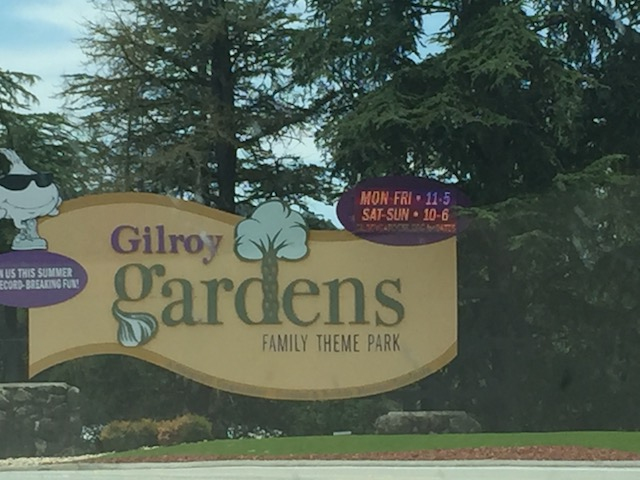
Yep. We're at Gilroy Gardens. The final park I need to visit in California. I know I tried visiting for a while, but things kept getting in the way. Well not today. I put my foot down and just went for it.
Sorry. Plese pass through the metal detector. We gotta make sure no lunatics weilding knives pop out of the flowers to scare the children.
CLIFF JUMP!!!
Plese get all your flower information right here.
Hmm. I didn't think a park like Gilroy Gardens would be crowded enough to need Fast Lane. But hey, fine with me.
Should we walk to the other side of the park or should we take the train? Such a tough choice.
 They have a Circus Tree themed play area!? Why didn't I bring my bathing suit!? NO!!! =P
They have a Circus Tree themed play area!? Why didn't I bring my bathing suit!? NO!!! =P
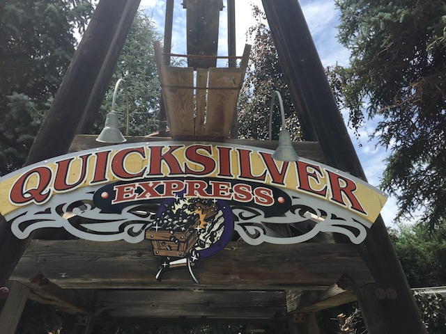
OK. Why did we come to Gilroy Gardens again?
 All right. Time for me to get the last non-kiddy credit in California that I don't have.
All right. Time for me to get the last non-kiddy credit in California that I don't have.
 You know, this is actually a fun mine train. Sure, it's no Thunderation or Big Thunder Mountain or Colorado Adventure. But it's a perfect fit for a park like Gilroy Gardens. Plus, I can think of several other mine trains that are much lamer than this.
You know, this is actually a fun mine train. Sure, it's no Thunderation or Big Thunder Mountain or Colorado Adventure. But it's a perfect fit for a park like Gilroy Gardens. Plus, I can think of several other mine trains that are much lamer than this.
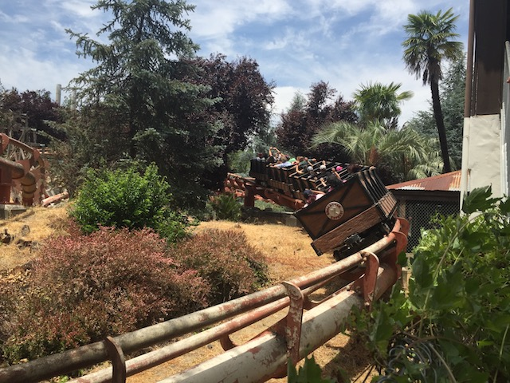
WEE!!!
Ooh. A Monarch Garden. This should be fun.
Mmm. Guava. *drool*
If you're too lazy to walk (Get some exercise you lazy bum), you can still check out the Monarch Gardens via their monorail.
Follow the butterflies. Follow the butterflies. Wee!
Who wants to get a view of these gardens?
Does it seriously feel like we're in a theme park right now?
 WHAT!!? THE MUSHROOM SWINGS ARE CLOSED!!!? NO!!!
WHAT!!? THE MUSHROOM SWINGS ARE CLOSED!!!? NO!!!
I was really looking foreward to riding in a giant mushroom. Why did you crush my dreams Gilroy Gardens? =(
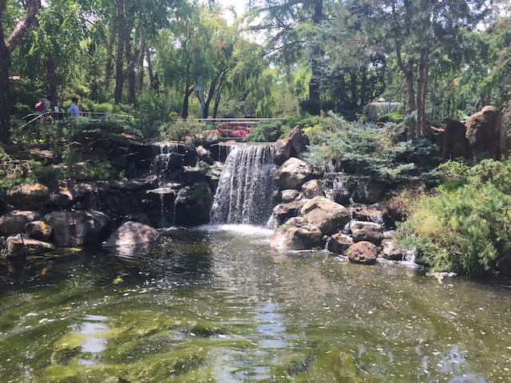
CLIFF JUMP!!!
Hmm. Do I want to go back to the 1920s, when there was no Wall Street regulation, people were painting lead on their face, and the Great Depression would begin? Or do I want to go back to the 1950s, when people were freaking out about McCarthyism, the Korea War was happening, and we were throwing a hissy fit in Arkansas about schools being desegregated? Such a tough choice.
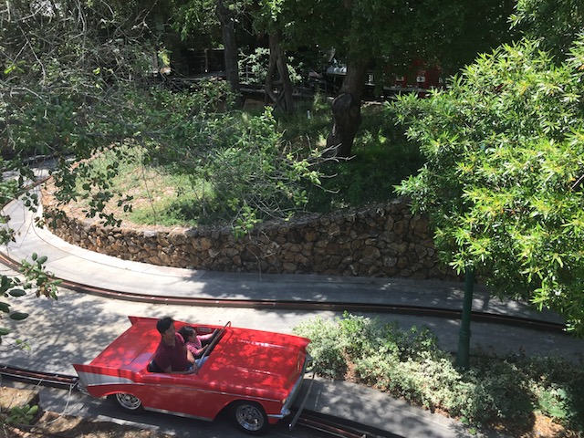
Hey kids! Who here wants to join me on a Suicide Night to Mexico!? =)
I'm also an obnoxious pompeous arrogant prick. But it's OK. I'm allowed to be those things because I'm a f*cking flower.
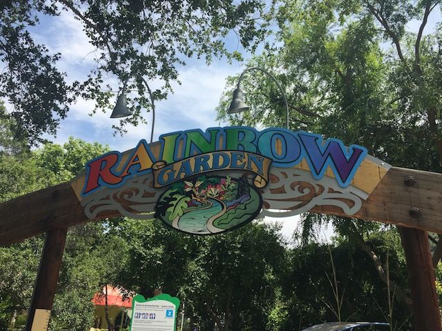
Sorry Cliff. We won't be doing the Stupid Boat Ride today.
OK. We have to check out the Circus Tree. After all, that's the thing that even made Gilroy Gardens a park at all. And hey, it looks really cool.
 No. That's not you getting dizzy and sick from this Garlic ride spinning too much. The smell of garlic just makes you nauseous. That's all. =P
No. That's not you getting dizzy and sick from this Garlic ride spinning too much. The smell of garlic just makes you nauseous. That's all. =P
 Oh wait. There's still another credit to get in this park. Activate credit whore mode!
Oh wait. There's still another credit to get in this park. Activate credit whore mode!
It's actually not a bad kiddy coaster.
 ♫Come, Mr. Tally Mon. Tally Me Banana.♫
♫Come, Mr. Tally Mon. Tally Me Banana.♫
Damn tree-f*ckers. Keep your fetish out of the public. =)
Don't mind me folks. I'm just a giraffe on the side of a building. That's just the way things roll in Oakland.
All right. I just had to stop here, especially with someone who lives in NorCal, but has never eaten here. This place is a favorite of mine in the Bay Area.
This is actually my 2nd time visiting this place (I first visited the place on a NorCal trip that had nothing to do with coasters). And you quickly learn here just how many ways there are to make Mac'N'Cheese. I want to try nearly all the Mac'N'Cheeses they have on that menu. Two down, too many more to go.
This time, I decided to try the Gilroy Garden Mac, in honor of finally making it to Gilroy Gardens today. It was really good (Seriously, Mac'N'Cheese is one of my favorite foods). Though I prefered the Smokey Bacon Mac, and there are even more ones I want to try. Damn it! I want to go back here!
"I'm bored. What do you want to do?" "Wanna go explore Napa tonight?" "F*ck it. Why not?"
OK. If I don't get some of that famous Napa wine soon, I'm going to be so dissapointed.
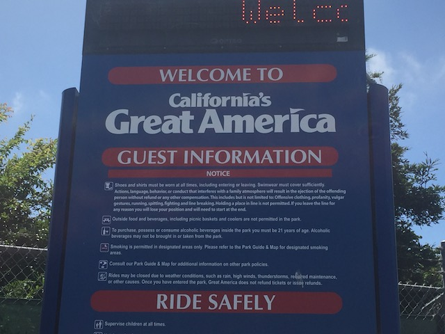
All right. Anoter day. Time for us to hit the final park of the trip. California's Great America.
Hmm. There's something new at California's Great America. But I just can't put my finger on it.
Gee. I wonder if the park is going to be busy today.
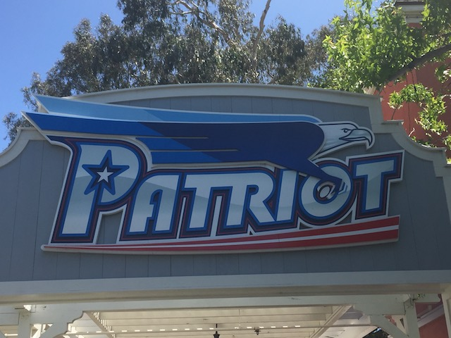
All right. Let's hit up what is the main reason for going to CGA today, as well as one of the pillar reasons for heading back up to Northern California this year. Patriot.
For those who don't know, Patriot isn't a new ride. It's just Vortex, rebranded as a floorless coaster. Cedar Fair decided to do this to Vortex after the wild success they had converting Mantis into Rougarou at Cedar Point. And it's a big hit here too.
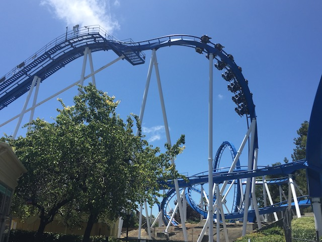
I'm a big fan of the makeover. For one thing, Patriot is much smoother now. There's not any of the headbanging that there was on Vortex.
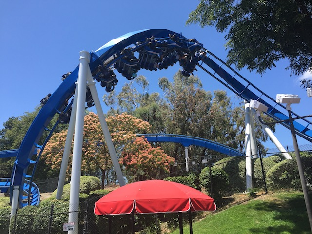
Though I also have to warn you. While I support the transition to floorless coaster on both Vortex and Mantis, don't you F*CKING DARE even think about doing this to Riddlers Revenge or Georgia Scorcher!!! Not even for a split second!!!
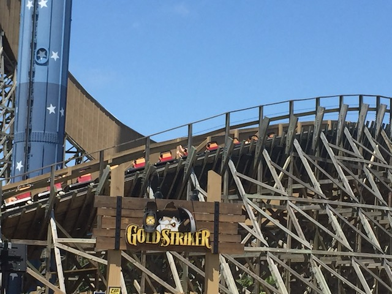
OK. That was fun. Now let's do the star attraction of the park. Gold Striker.
 I know in a past update, I called Joker the best coaster in NorCal. And while I do really like Joker and definetly call it my favorite coaster at SFDK, nope. Gold Striker is the best coaster in NorCal.
I know in a past update, I called Joker the best coaster in NorCal. And while I do really like Joker and definetly call it my favorite coaster at SFDK, nope. Gold Striker is the best coaster in NorCal.
Ugh. A line. I have to actually wait in a line. And it's about 30 minutes long. Stupid crowds.
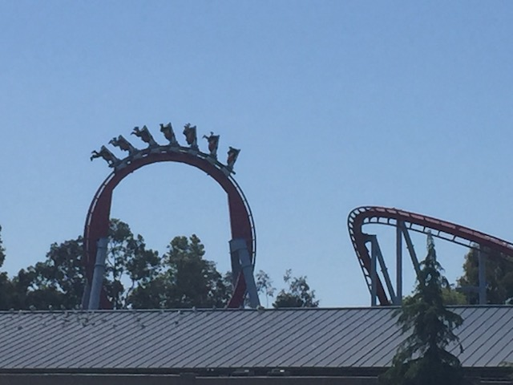
Aww. Don't worry Top Gun. We haven't forgotten about you. We still love you.
 HEARTLINE SPIN GOODNESS!!!!
HEARTLINE SPIN GOODNESS!!!!
 You know. Out of all the times I've been to California's Great America, I've never actually checked out their water park. Boomerang Bay. So I decided to do that today. Try something new.
You know. Out of all the times I've been to California's Great America, I've never actually checked out their water park. Boomerang Bay. So I decided to do that today. Try something new.
 Down Under Thunder was a fun half pipe and all, but I couldn't really enjoy it since I left all my shoes, and my clothes on a chair, like what I normally do everytime I go to a waterpark. But this time, I was freaking out about my stuff, constantly looking to see if my chair was visible from the line, and freaking out about my stuff since my wallet, phone, and car keys are in the zippered pocket of my pants. Again, I do this all the time. But for some reason, this particular time, it was getting to me. People in line assumed that I was scared to ride the ride (For your information, I jump off cliffs for fun. I'm fine on a water slide).
Down Under Thunder was a fun half pipe and all, but I couldn't really enjoy it since I left all my shoes, and my clothes on a chair, like what I normally do everytime I go to a waterpark. But this time, I was freaking out about my stuff, constantly looking to see if my chair was visible from the line, and freaking out about my stuff since my wallet, phone, and car keys are in the zippered pocket of my pants. Again, I do this all the time. But for some reason, this particular time, it was getting to me. People in line assumed that I was scared to ride the ride (For your information, I jump off cliffs for fun. I'm fine on a water slide).
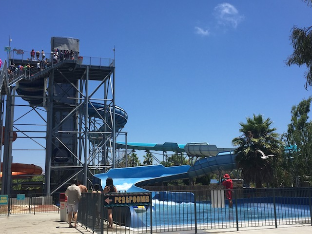
Honestly, after nearly backing out of Down Under Thunder just so I could get to my stuff and nearly having a heart attack about leaving it there, I decided to not check out the rest of the water park since Down Under Thunder was the slide I mainly wanted to do, and anxiety about my stuff just wasn't worth the rest of these slides. Maybe another time, I'll explore Boomerang Bay in more detail.
Ah, back in California's Great America. Drop Zone sounds good right now.
 Yeah. Arrow Loopscrews. Sounds pretty demonic to me. >=)
Yeah. Arrow Loopscrews. Sounds pretty demonic to me. >=)
HOLY CRAP!!! They still have a Bayern Curve here. These things are practically extinct. Kind of a bummer as they're fun flat rides. Better ride it while it's still here.
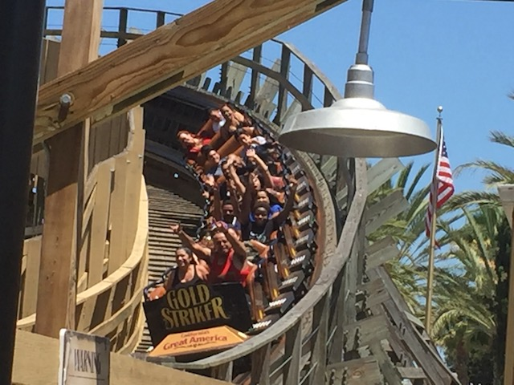
Yeah. I know it has a long line. But...I just gotta reride Gold Striker. It's really that good.
Hey Gilroy Gardens! Look what I can ride here! =)
 Might as well snag one last ride on Top Gun before heading on out of here.
Might as well snag one last ride on Top Gun before heading on out of here.
And finally, driving back down to SoCal, I discovered a McDonalds in Paso Robles that still had the original Golden Arches. All in all, this was a very fun Northern California trip, where I got to explore some of the new stuff in Northern California as well as return to some fun stuff that I really enjoyed. And considering that CGA is getting something for 2018 and I'm predicting that SFDK is getting an S&S Free Spin, I know I'll be back up here next year. =)
Home
|